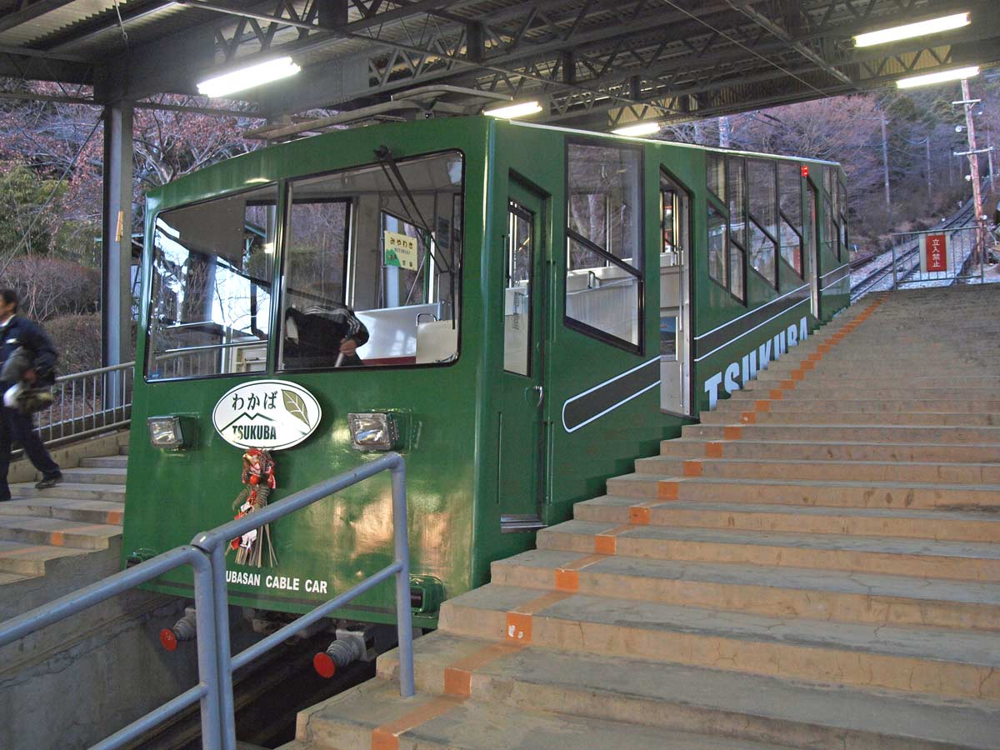
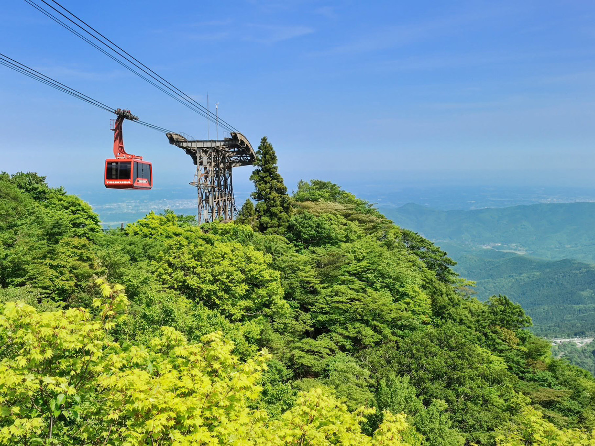
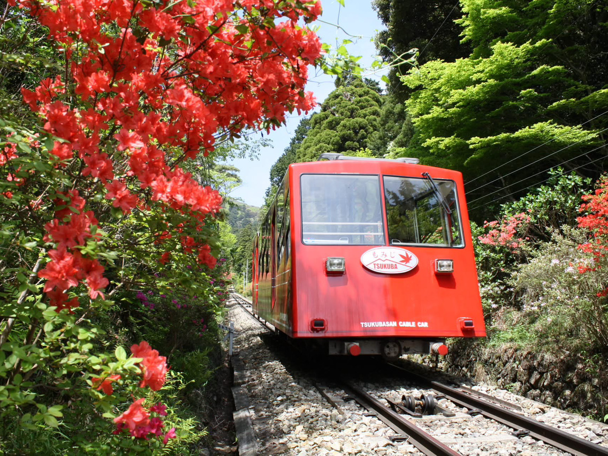
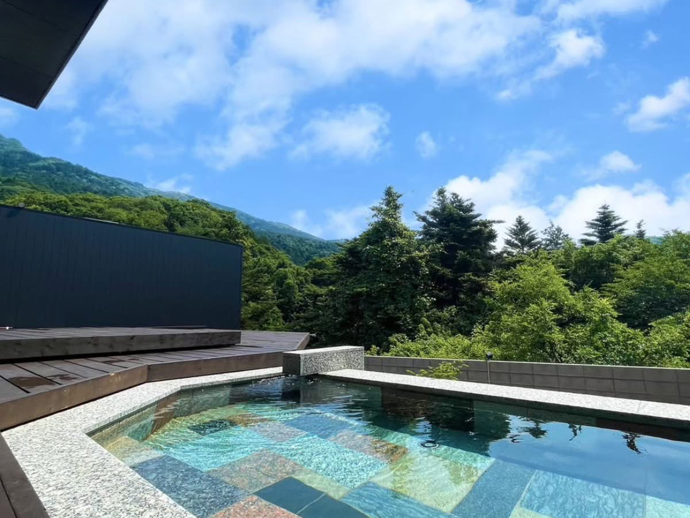
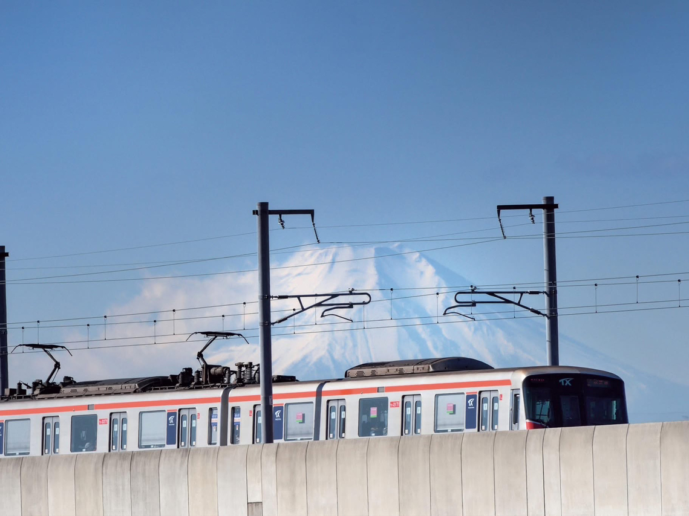
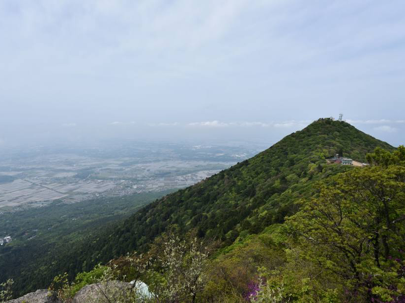
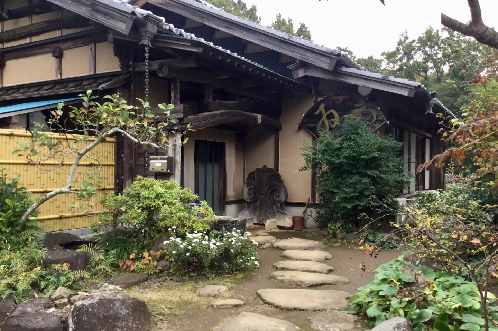
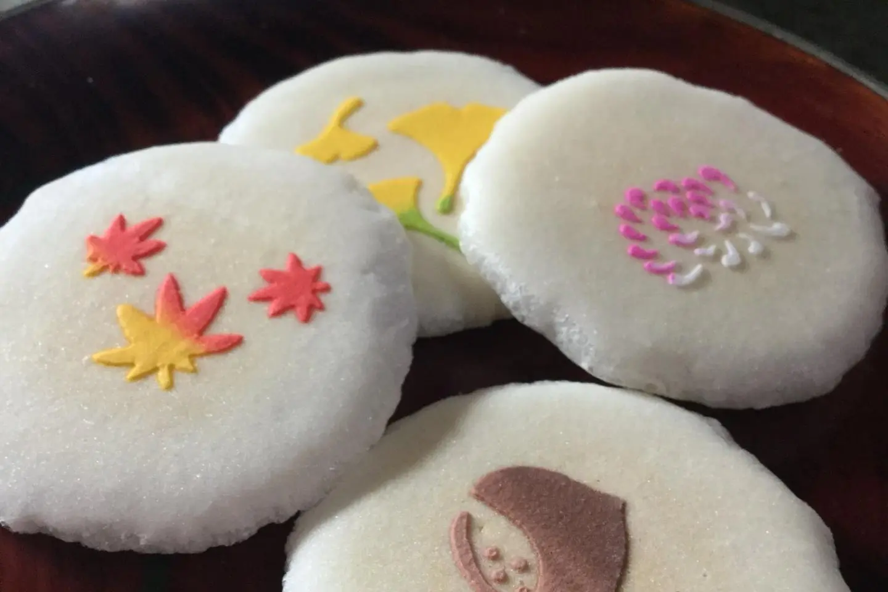
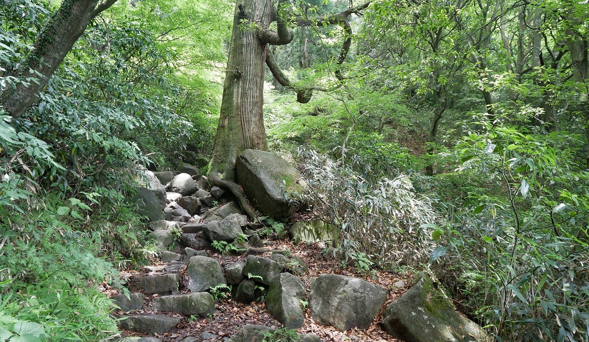

"ฟูจิแห่งตะวันตก, สึคุบะแห่งตะวันออก" (富士は西、筑波は東)
เขาสึคุบะเป็นภูเขาที่มี 2 ยอดเขาแฝด สูง 877 เมตรเหนือระดับน้ำทะเล (ยอดเขานิโยว์ไท 877m & ยอดเขานันไท 871m) ตั้งอยู่ใจกลางที่ราบคันโต จังหวัดอิบารากิ ชาวญี่ปุ่นยกย่องและผูกพันมาตั้งแต่สมัยโบราณคู่กับภูเขาไฟฟูจิ ขึ้นเขาสะดวกสบายด้วย Swiss Cable Car และ Ropeway โดยไม่ต้องใช้อุปกรณ์ปีนเขาลำบาก เหมาะสำหรับทุกวัยในครอบครัว

4 ขั้นตอนการเดินทางฉบับสมบูรณ์ (Tokyo -> Mt. Tsukuba Summit)
ระยะเวลารวม: ~1.5 - 2 ชั่วโมงสถานี Tokyo Station -> ท่ารถ Tsukuba Center
- พาหนะ: รถบัสด่วนพิเศษ Expressway Bus (ขึ้นที่ทางออก Yaesu Minami Exit ของสถานี Tokyo Station)
- เวลาเดินทาง: ประมาณ 60 นาที (เที่ยวเดียว 1,180 เยน) ไปลงที่ท่ารถ Tsukuba Center
- 🎟️ ตั๋วโปรสุดคุ้ม Tsukubasan Story Ticket: ราคา 4,000 เยน (เด็ก 2,000 เยน) รวมค่ารถบัสด่วน Expressway Bus ขาไป-กลับ + รถ Shuttle Bus + Cable Car / Ropeway แบบไม่จำกัด ประหยัดกว่าแยกซื้อเกือบ 1,000 เยน! (ซื้อได้ที่จุดจำหน่ายตั๋ว Expressway Bus สถานีโตเกียว)
Tsukuba Center -> หน้าศาลเจ้า Tsukubasan Shrine
- พาหนะ: รถชัทเทิลบัส Mt. Tsukuba Shuttle Bus (ขึ้นที่ชานชาลาหมายเลข 1 ป้าย Mt. Tsukuba 1)
- เวลาเดินทาง: 36 นาที (ค่าโดยสาร 720 เยน) ลงป้าย Tsukubasan Shrine (筑波神社前)
- ไฮไลท์: รถบัสมีเสียงบรรยายแนะนำประวัติศาสตร์และทัศนียภาพเมือง Tsukuba เป็นภาษาอังกฤษตลอดเส้นทาง
หน้าศาลเจ้า -> ศาลเจ้าสึคุบะซัน -> สถานี Miyawaki
- เส้นทางเดิน: ลงรถบัสแล้วเดินลอดเสาประตูโทริอิสีแดงยักษ์ เดินขึ้นเนินผ่านลานร้านขายของฝากและโรงแรม
- สักการะศาลเจ้าชินโต (Tsukubasan Shrine): ประทับเทพเจ้าสามีภรรยา (สึคุบะโอะ โนะโอคามิ & สึคุบะเมะ โนะโอคามิ) โดดเด่นด้านความรัก การผูกสัมพันธ์ และความสามัคคีครอบครัว
- ต่อสถานี Cable Car: หันหน้าเข้าอาคารสักการะ แล้วเดินไปทางซ้าย ลอดซุ้มประตูโค้งสีฟ้าเข้าสู่ สถานีมิยาวากิ (Miyawaki Station)
สถานี Miyawaki -> นั่ง Cable Car สู่ยอดเขาสึคุบะ
- พาหนะ: รถรางไฟฟ้าเคเบิ้ลคาร์ Cable Car (ตั๋วไป-กลับ 1,050 เยน)
- ขบวนรถ: มี 2 ขบวน ได้แก่ "ขบวนโมมิจิ" (สีแดง) และ "ขบวนวากาบะ" (สีเขียว)
- จุดหมาย: ถึงสถานีบนยอดเขา Tsukubasanjo Station เข้าสู่ลานจุดชมวิว มิยูกิกะฮาระ (Miyukigahara)
แกลเลอรีภาพถ่ายจริง: บรรยากาศเขาสึคุบะ & การเดินทาง

ศาลเจ้าสึคุบะซัน (Tsukubasan Shrine): ศาลเจ้าชินโตประทับเทพเจ้าสามีภรรยา

Cable Car ขบวนวากาบะ (สีเขียว): รถรางไฟฟ้าไต่ขึ้นผืนป่าสนเขาสึคุบะ

Mt. Tsukuba Ropeway: กระเช้าลอยฟ้าเชื่อมต่อยอดเขานิโยว์ไท
ประสบการณ์ทริปฮีลใจ & อาหารอร่อยบนยอดเขา (Trip.com Review)
รีวิวเต็มบน Trip.com (4.8★)แบ่งปันประสบการณ์จริงโดย Andy05x (ผู้เชี่ยวชาญระดับโลก Trip.com): "ทริปฮีลใจผ่อนคลายความเหนื่อยล้า ชาร์จแบตให้ร่างกายและจิตใจได้อย่างเต็มเปี่ยม!"

1. วิวพาโนรามาที่ราบคันโต
ทอดสายตามองวิวที่ราบคันโตสุดลูกหูลูกตา ความเครียดและความวุ่นวายปลิวหายไปทันที

2. เส้นทางยอดเขาแฝด & โขดหิน
เดินเล่นเชื่อมระหว่างยอดเขานันไตและเนียวไต ชมโขดหินแปลกตาและตำนานเทพเจ้า

3. อุด้งผักป่ามังสวิรัติ (山菜)
นั่งร้านน้ำชาบนยอดเขา ซดซุปอุด้งผักป่าร้อนๆ ฮีลใจท่ามกลางลมหนาว

4. ซอฟต์เสิร์ฟนมสดท้องถิ่น
ตบท้ายด้วยซอฟต์เสิร์ฟนมสดรสเข้มข้น หวานหอมกลมกล่อม ให้รางวัลแก่ตัวเอง

ยามเย็นแสงพระอาทิตย์ตกดินค่อยๆ ย้อมผืนดินที่ราบคันโตให้กลายเป็นสีทองงดงามเงียบสงบ
อาหารขึ้นชื่อเชิงเขาสึคุบะ: ร้านโซบะทำมือ ชิน อิดะ (Soba Shin Ida)
JapanTravel Reviewร้านโซบะทำมือระดับปรมาจารย์เชิงเขาสึคุบะ เมนูเด็ดอันดับ 1 คือ โซบะเย็นกับเนื้อเป็ดปิ้งย่างบนโต๊ะอาหาร (Kamo Niku Soba)

เรือนญี่ปุ่นโบราณบรรยากาศบ้านพักตากอากาศ

โซบะเย็นคู่เนื้อเป็ดย่างบนโต๊ะอาหาร

ชุดมัทฉะร้อนและขนมเซมเบ้ต้อนรับฟรี
จุดชมวิว & ไฮไลท์ห้ามพลาดบนยอดเขาสึคุบะ

1. ลานมิยูกิกะฮาระ (Miyukigahara)
ลานกิจกรรมกว้างขวางบนยอดเขา ทอดสายตามองที่ราบคันโต (Kanto Plain) ที่กว้างใหญ่ที่สุดในญี่ปุ่น มองเห็นตั้งแต่ทิศเหนือจรดทิศใต้รวมถึงโตเกียว มีกล้องส่องทางไกลหยอดเหรียญ 100 เยน ร้านค้าของที่ระลึก และร้านโซบะภูเขาร้อนๆ ให้บริการ

2. จุดชมวิวโคมะ (Koma Panorama Deck - 360°)
ตั้งอยู่ติดกับสถานี Cable Car ชั้น 2 มีดาดฟ้าทรงวงกลม สามารถเดินขึ้นบันไดเวียนไปชมวิวทัศนียภาพ 360 องศาพาโนรามา ในวันที่ฟ้าโปร่งจะมองเห็น โตเกียวสกายทรี (Tokyo Skytree), ภูเขาไฟฟูจิ (Mt. Fuji) และ ทะเลสาบคาสุมิกะอุระ (Kasumigaura) ทะเลสาบใหญ่เป็นอันดับ 2 ของญี่ปุ่น
3. ร้านกาแฟ 877Stand (สาขายอดเขา 877m)
Summit Cafe Experienceจิบกาแฟสดหอมกรุ่นพร้อมชมวิว 360 องศาเหนือที่ราบคันโต บาริสต้าตั้งใจวาดลวดลาย Custom Latte Art สวยงามตระการตา นั่งพักผ่อนรับลมหนาวได้สบายๆ ไม่ต้องปีนเขาลำบาก
ข้อควรระวังสำคัญ & ตารางเวลารถบัสขากลับ (Return Bus Deadline)
เวลารถบัสขากลับรอบสุดท้าย (17:10 น.)
รถบัสชัทเทิลบัสรอบสุดท้ายจากศาลเจ้า Tsukubasan Shrine กลับไปยัง Tsukuba Center ออกเวลา 17:10 น.
⚠️ คำแนะนำสำคัญ: ควรนั่ง Cable Car / Ropeway ลงมาจากยอดเขาอย่างช้าที่สุดไม่เกินเวลา 16:00 น. เพื่อให้ทันเที่ยวรถบัสขากลับ!
การเตรียมตัว & เครื่องแต่งกาย
- เสื้อผ้า: อุณหภูมิบนยอดเขาค่อนข้างเย็นกว่าพื้นล่าง ควรเตรียมเสื้อแจ็คเก็ตกันลมทับ 1 ตัว
- รองเท้า: สวมรองเท้าผ้าใบหรือรองเท้าเดินสบาย เนื่องจากมีบันไดหินและทางลาดชัน
- กฎความปลอดภัย: ภายในบริเวณภูเขา **ห้ามจุดไฟและห้ามสูบบุหรี่** ทุกพื้นที่